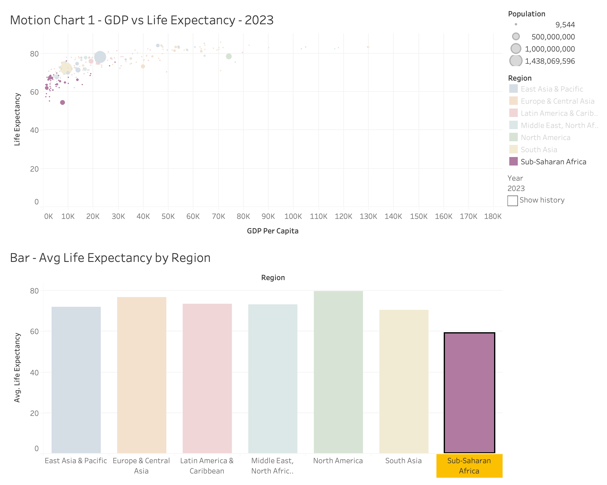
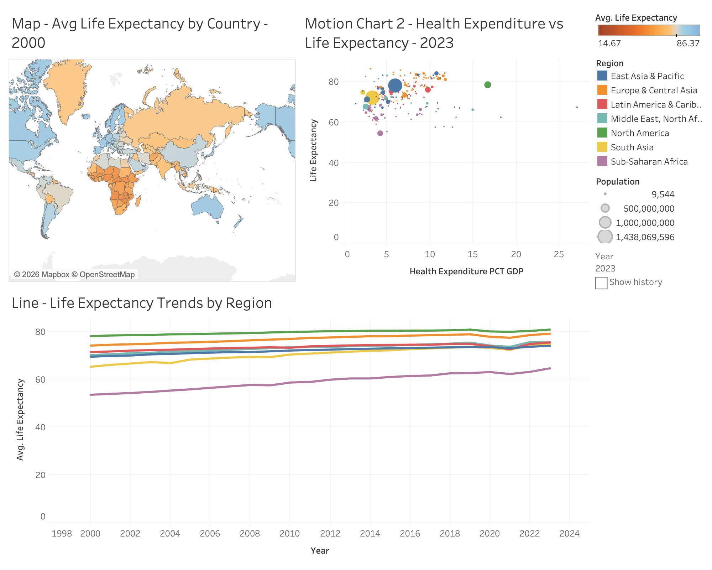
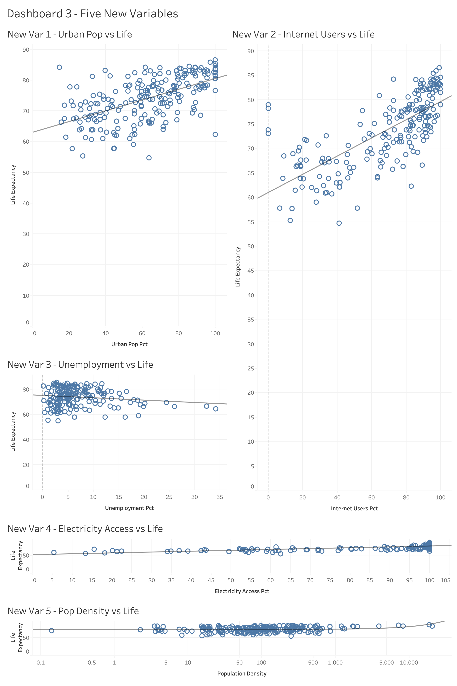

Putting It Together: Three Linked Dashboards
The eleven visualizations from the story page aren't meant to be read on their own. Ten of them are paired into three interactive dashboards so you can follow one country or one region across several charts at once; the physicians-per-1,000 motion chart (Fig. 4) is the exception, standing on its own on the story page. The figures below are static exports. The interactivity described under each one is what the actual workbook does when opened in Tableau, linked from the Overview page.
Dashboard 1: Wealth and Regional Comparison

The Year control animates the bubble cloud across 23 years, sweeping up and to the right since GDP per capita and life expectancy both climb worldwide over that stretch. Highlight Actions, set to All Fields, link each bubble to its region in the bar chart underneath, so the two views move together instead of sitting as separate, disconnected charts.
Dashboard 2: Geography, Spending, and Time

This dashboard pairs the map's geography with the health-expenditure relationship and the 23-year trend line, so all three are visible at once. Highlighting, set to All Fields, links a country on the map to how its spending compares with its neighbors and to where its region's trend line falls relative to everyone else's. Each chart still runs its own Year control, since Tableau animates the Pages shelf per worksheet instead of on one shared timeline, but the three views stay tied together regardless.
Dashboard 3: Development, Access, and Density

These five variables don't have a time dimension the way the original six do, so there's nothing to animate here, but linking them still matters. Five separate static images don't let you follow one country the way a single dashboard does. Highlight Actions tie all five scatters to the same country, so a country that stands out on internet use (Singapore is a good example) is just as traceable across urbanization, unemployment, electricity access, and density.
Insights gained
Working through the dashboards instead of just looking at static charts one at a time actually changed a couple of my conclusions, not just how I presented them.
The clearest one: physicians per 1,000 and GDP per capita both track life expectancy closely once you can flip through them side by side, but health-expenditure share of GDP is the weakest of the three, which is a little uncomfortable given how often that number gets thrown around in health-policy debates. Clicking through the motion charts also made the outliers stand out more than they did in the static screenshots. There's a cluster of large, high-population, mid-expectancy countries sitting below the main group in Figs. 2 through 4, and they drag the overall global picture toward the middle even while a bunch of smaller wealthy countries sit up near the top. A population-weighted average and a simple country-by-country count genuinely tell two different stories here.
The trend line chart makes something else obvious: progress isn't a straight shot upward. Almost every region dips between 2019 and 2021, and it's a good reminder that a multi-decade upward trend can still take a real step backward for a couple of years without the overall story changing.
The map is honestly where the linking pays off the most. The regional average for Sub-Saharan Africa (58.97 years) doesn't sound that alarming on its own. It just looks like the bottom of a normal-ish range, but watching the animated, diverging map stay the same shade of orange for 23 years while the rest of the world shifts to blue makes the stall a lot harder to miss.
As for the five newer variables, internet use ended up tracking life expectancy about as well as GDP did, which I wasn't expecting going in, and urban population share and electricity access weren't too far behind it. Unemployment and population density were the weakest of everything I tested in this whole project, original six included, and I think that's less about them being irrelevant and more about what each one is actually measuring (more on that on the story page).
Conclusion
No single variable explains life expectancy on its own, but the data does let you rank the candidates. Healthcare workforce capacity and overall wealth matter more than how much a country spends on health as a share of GDP. Geography still tracks pretty closely with income, even twenty-plus years into the century. And a clear long-term upward trend can still have a real dip built into it. Building this as three linked dashboards instead of eleven separate charts is really what made comparisons like GDP against expenditure, or one region against another, something I could click through myself instead of just describing in a caption.